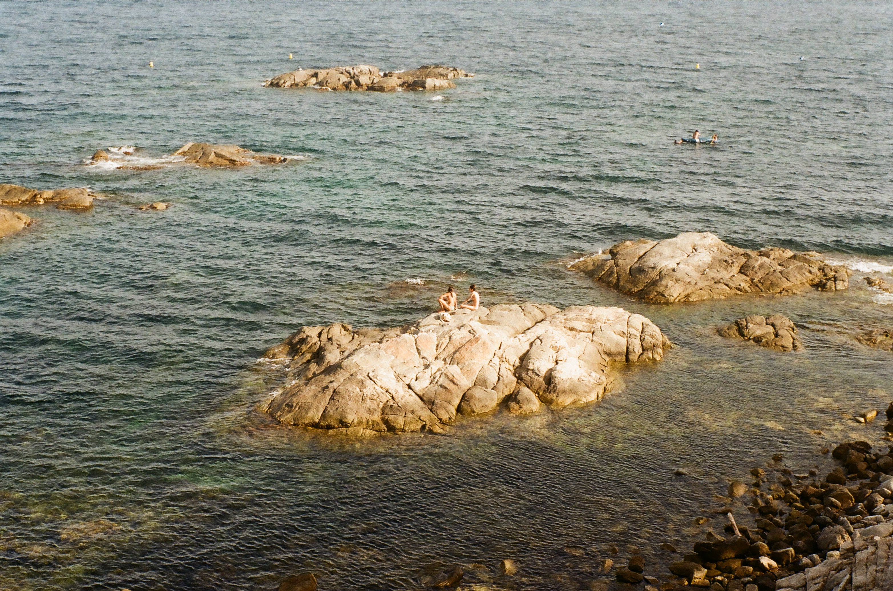

<extends
  src="project.html"
  locals='{"title":"ocean",
  "year":"2023",
  "description":"Lumière dorée captée sur pellicule, grain délicat d’un instant figé. L’image respire la chaleur du soleil couchant, les textures brutes du littoral, et cette douceur propre au film qui laisse place à l’imperfection vivante. C’est un instant suspendu, intime et sauvage, où la nature et l’humain se rencontrent sans artifice.",
  "label":"photographie",
  "alt":"#"}'
>
  <block name="images">
    
  </block>
</extends>
